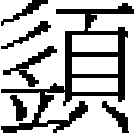

按竺邇車里 步魯合答 國寶 趙世延 野峻台 阿巴直 月乃合馬潤 馬祖常
按竺邇，雍古氏。幼鞠於外祖達工家，達工，朮要甲氏，譌爲「趙家」，故按竺邇亦姓趙氏。達工爲金羣牧使，太祖獲其牧馬，達工死之。
按竺邇年十四，隸皇子察合台部下。嘗從獵射，獲數麋，有二虎突出，按竺邇三發皆中之，由是以善射名。從太祖征西域，以功爲千户。二十年，從攻西夏積石州，先登，拔其城。圍河州，破臨洮，攻德順，又從攻鞏昌，皆有功。
太宗即位，以按竺邇爲元帥，鎮删丹州，自燉煌置驛通西域。三年，從圍鳳翔，按竺邇分兵攻西南隅，選死士先登，拔其城，追斬金將劉興哥。分兵攻西和州，宋將彊俊堅壁，欲老我師。按竺邇率死士詬城下挑戰，俊怒，悉衆出。按竺邇佯走，俊追之，因以奇兵奪其城，生獲俊。餘衆退保仇池，進擊，拔之。從攻平涼、慶陽、邠、原、寧夏，皆降。涇州叛，殺守將郭元恕，按竺邇往定之。衆議屠城，按竺邇但誅首惡。師還原州，降民棄老幼夜亡走，衆曰：「此必反，宜誅之，以儆其餘。」按竺邇曰：「此輩懼吾驅之北徙耳。」遣人諭之曰：「汝等若走，以軍法從事，父母妻子並誅矣。汝歸，保無他。明年草青時，其具牛酒迎我。」民皆復業。豪民陳苟集數千人匿新寨諸洞，衆議以火攻之。按竺邇曰：「招諭不出，攻未晚。」遂偕數騎抵寨，縱馬解弓矢，召苟遥語之，折矢爲誓，苟即率其衆羅拜降。
金人守潼關，攻之，戰於扇車回，失利。睿宗分兵由山南入金境，按竺邇爲先鋒，趣散關。宋人已燒絶棧道，復由兩當縣出魚關，軍沔州。宋制置使桂如淵守興元，按竺邇假道於如淵曰：「宋讐金久矣，曷從我以洗國恥？今欲假道南鄭，由金、洋達唐、鄧，會大兵以滅金，豈獨吾利，亦宋之利也。」如淵遂輸芻糧，遣百人導大兵，由武休關東抵鄧州，西破小關子。金人大駭，謂我軍自天而下。睿宗以玉杯盤、生口三十賞按竺邇假道功。
初，金將郭蝦䗫自鳳翔突圍出，保金、蘭、定、會四州。至是金亡，命按竺邇往攻之。圍蝦䗫於會州，食盡，城陷，蝦䗫手劍驅妻子於一室焚之。有一女奴抱兒出，泣授人曰：「將軍盡忠，忍使絶嗣？此其幼子也，幸垂哀憫！」言畢，復赴火死。按竺邇聞之，惻然，命收養之。金將汪世顯守鞏州，按竺邇奏記皇子闊端，請遣使招之。皇子遣按竺邇往，世顯果降。太宗勞之曰：「長軍民官，何官爲尊，任汝自擇。」按竺邇固辭。乃拜征行大元帥，賜錦衣。
七年，大軍伐蜀，皇子出大散關，分兵令宗王穆哥等出陰平。按竺邇領炮手兵爲先鋒，破宕昌、階州。攻文州，守將劉禄堅守不下，諜知城中無井，乃斷其汲道，率勇士梯城而上，陷之，禄不屈死。因招徠吐蕃酋勘陁孟迦等十族，賜以金符，略定龍州，遂與大軍合，進克成都。師還，成都復叛。按竺邇言於宗王曰：「隴西州縣甫平，人心猶貳，西漢陽隴、蜀之衝，宜得良將鎮之。」宗王曰：「無以易汝。」分蒙古千户五人，隸麾下以往。按竺邇命侯和尚等南戍沔州之石門，木魯關西戍階州之兩水關，謹斥堠，嚴巡邏，境内帖然，敵不敢犯。
十一年，從元帥塔海伐蜀，克隆慶，進攻重慶，圍萬州，敗宋舟師於夔門。十三年，連下西川二十餘城，成都守將田顯開北門迎降。其制置使陳隆之遁，追獲之，縛至漢州，令誘降守將王夔，夔乘夜驅牛突圍走，遂斬隆之。六皇后稱制元年，攻拔遂寧、瀘、叙等州，進克資州。命按竺邇班師，安輯涇、邠二州。憲宗即位，宋制置使余玠攻興元，文州降將于德新乘隙叛，執扈、牛二鎮將，率衆走江油。憲宗召按竺邇還鎮。按竺邇遣别將直搗江油，奪扈、牛二將歸。
中統元年，世祖即位，叛將阿藍答兒、渾都海據關隴。時按竺邇以老，委軍事於其子，帝遣宗王哈丹、阿曷馬等西討。按竺邇曰：「今内難方殷，豈臣子安卧之時？吾雖老，尚能破賊。」遂引兵出删丹之耀碑谷，從阿曷馬與賊合戰。會大風，晝晦，大敗之，斬馘無算。捷聞，帝賜璽書褒美，賜弓矢、錦衣。四年卒，年六十九。延祐元年，贈推忠佐運功臣、太保、儀同三司、上柱國，封秦國公，諡武宣。子十人：車里、國寶、南家台、阿巴直、欽木兒、質兒瓦台、主渾、伯延、察野、連台兒、孛浪台。
車里，襲父職。從都元帥紐璘攻成都，宋將劉整以重兵守雲頂山，車里敗之，拔其城。又進攻重慶，車里將兵千人爲先鋒，渡馬湖江，敗宋兵於馬老山。諸軍還屯灰山，宋兵夜來劫營，復爲車里所敗，斬首三百級。世祖即位，賜金符，爲奥魯元帥，又改征行元帥。
至元二年，車里以老疾不任事，命子步魯合答代領其軍。至元八年，授步魯合答管軍千户，佩金符。宋將昝萬壽攻成都，僉省嚴忠範遣步魯合答將兵七百人禦之於沙坎，流矢中右頰，拔矢，戰愈力，大敗其軍。十一年，行院汪良臣圍嘉定，步魯合答即率其衆攻九頂山，克之，嘉定降。進攻重慶，宋軍突圍出走銅鑼峽，行院呼敦遣步魯合答追之，至廣羊壩，斬首二百級。瀘州叛，還軍討之，步魯合答以所部兵攻寶子寨，歲餘不下，造雲梯以登，始克之。十六年，重慶降，以功遷武略將軍、征行元帥。
二十一年，命統蒙古探馬赤軍千人從征金齒蠻，平之。都元帥蒙古歹征羅必甸，步魯合答率游兵爲前鋒，江水暴溢，率衆泅水而渡。傅城下七日，諸軍始至，步魯合答先登，拔其城，遂屠之。又從征八百媳婦，至車釐。車釐者，其酋長所居也。諸王闊闊命步魯合答將游騎三百往招之降，不聽，進兵攻之，步魯合答毁其北門而入。賜金虎符，授懷遠大將軍、雲南萬户府達魯花赤，卒。子忙古不花，襲管軍千户。
國寶，一名黑仔，倜儻有謀略。按竺邇爲元帥，軍務悉以委之。
中統元年，從攻阿藍答兒有功。阿藍答兒部將火都據吐蕃之點西嶺，國寶攝帥事討之。衆欲速戰，國寶曰：「此窮寇也，宜少緩，以計破之。」火都欲西走，國寶據險要之，挑戰則斂兵自固。相持兩月，潛師出其不意，擒之。捷聞，賜弓矢、金綺。
初，按竺邇告老，詔使車里襲征行元帥。車里以病不視事，國寶謂諸弟曰：「昔我先人立功西垂，關隴雖平，而西戎未戢，此吾輩自奮之時也。」乃遣部將謝鼎持金帛説降吐蕃，酋長勒陁孟迦從國寶入覲。國寶奏曰：「文州山川險扼，控制北蕃，宜城文州，屯兵鎮之。」乃授國寶三品印，爲蒙古漢軍元帥並文州吐蕃萬户府達魯花赤。國寶宣上威德，於是扶州諸羌呵哩禪波哩揭諸酋皆降，從國寶入覲。國寶圖山川形勢以獻，詔授呵哩禪波哩揭爲萬户，賜金虎符，諸酋長爲千户，賜金符。國寶治文州有善政。至元四年，卒。延祐元年，贈推誠佐理功臣、光禄大夫、平章政事、柱國、封梁國公，諡忠憲。國寶子世榮、世延，俱以趙爲氏。
世榮，一名那懷，襲懷遠大將軍、蒙古漢軍副元帥，兼文州萬户府達魯花赤，後以功進安遠大將軍、吐蕃宣慰使議事都元帥，佩三珠虎符。
趙世延，字子敬，一名達察兒，天資秀發，喜讀書。弱冠，世祖召見，俾入樞密院、御史臺習官政。至元二十一年，授雲南諸路提刑按察司判官，時年二十有四。二十六年，擢監察御史，與同列五人劾丞相桑哥不法。中丞趙國輔，桑哥黨也，抑不以聞，更以告桑哥，於是五人悉爲所擠。桑哥知帝眷世延，獨容之。敕按平陽達魯花赤也先忽都贓鉅萬，鞫左司郎中董仲威殺人獄，皆明允。二十九年，轉奉議大夫，出僉江南湖北道肅政廉訪司事。修澧陽縣壞堤，嚴常、澧掠賣良民之禁，部内頌之。
元貞元年，除江南行御史臺都事，丁内艱，不赴。大德元年，復除前官。三年，移中臺都事，俄改中書左司都事，復爲中臺都事。六年，由山東肅政廉訪副使，改江南行臺治書侍御史。十年，除安西路總管。安西積訟三千牘，世延既至，不三月，剖決殆盡。陝民饑，省臺議，請於朝賑之。世延曰：「救荒如救火，願先發廪以賑。朝廷設不允，世延當傾家財以償。」從之，所活者衆。
至大元年，除紹興路總管，改四川肅政廉訪司使。蒙古軍科差繁重，而就戍往來者擾民尤甚，且軍官或抑良民爲奴，世延皆除其弊。又修都江堰，民尤便之。四年，遷中奉大夫、陝西行臺侍御史。先是，八百媳婦叛，右丞劉深討之，兵敗而還，坐棄市。皇慶元年，復命右丞阿忽台繼往，世延言：「蠻夷地在羈縻，而重煩天討，致軍旅亡失，誅戮省臣。藉使盡得其地，何補於國？今窮兵黷武，實傷聖治。朝廷當選重臣知治體者，付以邊寄，兵宜止，勿用。」事聞，樞密院臣以爲用兵國家大事，不宜以一人之言爲進止。世延聞之，章再上，事卒罷。
二年，拜江浙行省參知政事，尋召還，拜侍御史。延祐元年，省臣奏：「比奉詔漢人參政用儒者，趙世延其人也。」帝曰：「世延誠可用，然雍古氏非漢人，其署宜居右。」遂入之中書，參知政事。明年，遷御史中丞。詔省臣自平章以下，送之官。其禮前所未有，由是爲權臣所忌，乃假皇太后命出世延爲雲南行省右丞。陛辭，帝特命留之。三年，右丞相帖木迭兒罷，未逾月，復起爲太子太師，世延劾其罪惡十有三，詔奪其官。尋遷翰林學士承旨，兼御史中丞，世延固辭，乃解中丞。五年，進光禄大夫、昭文館學士，守大都留守，乞補外，拜四川行省平章政事。世延議即重慶路立屯田，得江津、巴縣閑田七百八十三頃［一］，摘軍千二百人墾之，歲得粟萬一千七百石。
仁宗崩，帖木迭兒復居相位，鋭意報復，屬其黨何志道，誘世延從弟胥益兒哈忽誣告世延。逮世延置對，中途遇赦。世延以疾抵荆門，留就醫。帖木迭兒遣使逮至京師，復使人諷世延啗以美官，令告引同時劾己者。世延不聽，乃坐以違詔書不敬，又謀害宰相，當處極刑。帝以事在赦前，不允。帖木迭兒更以它事白帝繫之，刑曹逼令自裁，世延不爲動。逾年，胥益兒哈忽亡去，中書左丞相拜住屢言世延亡辜，命出獄養疾。先是，帝獵北涼亭，顧謂侍臣曰：「趙世延，先帝所尊禮，而帖木迭兒妄入其罪，數請誅之，此殆報私怨耳，朕豈能從之！」侍臣皆叩頭稱萬歲。帖木迭兒在上京，聞世延出獄，索省牘視之，怒曰：「此左丞相罔上所爲也。」事聞，帝語之曰：「此朕意耳。」未幾，帖木迭兒死，事乃釋。世延僑於金陵。
泰定元年，召還，除集賢大學士。明年，出爲江南行臺御史中丞。四年，入朝，復爲御史中丞，又遷中書右丞。詔：「趙世延頃爲權奸所誣，中書宜徧移天下，昭雪其辜。」仍加翰林學士承旨、光禄大夫。經筵開，兼知經筵事，又加同知樞密院事。
泰定帝崩，燕鐵木兒迎文宗於江陵，使世延分典機務。文宗即位，世延仍以御史中丞兼翰林學士承旨，以疾乞歸田里，詔不允。用中丞崔彧故事，加平章政事，居前職。天曆二年正月，復除江南行臺御史中丞，行次濟州，三月，改集賢大學士，六月，又加奎章閣大學士，八月，拜中書平章政事。冬，世延至京，固辭，不允。詔以世延年高多疾，許乘小車入内。至順元年，詔世延與虞集等纂修《經世大典》，世延屢乞解中書政務，專意纂修。帝曰：「老臣如卿者無幾，求退之言，後勿復陳。」四月，仍加翰林學士承旨，封魯國公。六月，燕鐵木兒言：「嚮有旨，惟許臣及伯顔兼領三職，今趙世延以平章政事兼翰林學士承旨、奎章閣大學士。」引疾以辭。帝曰：「朕重老成人，其令世延仍視事中書，果病，不領銓選可也。」七月，監察御史葛明誠言：「世延年踰七十，智慮衰耗，固位苟容，無補於事，請斥歸田里。」詔中書議之。燕鐵木兒言：「世延以年老屢乞致仕，臣等以聞，敕『世延舊人，宜在中書』。御史之言，不知前旨也。」帝曰：「御史言，世延固難任中書，其仍以翰林、奎章之職任之。」是年，世延乃乞病歸，養疾於金陵之茅山。二年，改封涼國公。
元統二年，詔賜世延錢四萬緡。至元元年，仍除奎章閣大學士、翰林學士承旨、中書平章政事、魯國公。明年五月，至大都，十一月卒，年七十有七。至正二年，贈世忠執法佐運翊亮功臣、太保、金紫光禄大夫、上柱國，追封魯國公，諡文忠。世延嘗較定律令，彙次《風憲弘綱》行於世。
五子：野峻台；次月魯，江浙行省理問官；次伯忽，夔州路總管，天曆初囊加台據蜀叛，死於難，贈推忠秉義效節功臣、資善大夫、中書右丞、上護軍，追封蜀郡公，諡忠愍。
野峻台，由四川行省左右司郎中、西行臺監察御史、河西廉訪副使，轉黄州路總管。湖廣既陷，朝廷察其材，擢四川行省參知政事，命與平章咬住討賊。咬住軍五千，分鋭卒八百，使野峻台爲前驅。賊方據巴東縣，攻拔之。是時，歸、峽等州皆爲賊所守，野峻台破賊江上，斬溺無算。歸、峽平，又進拔枝江、松滋兩縣，乘勝趨江陵。賊出陣清水門，鏖戰至夕，賊退入城。黎明，賊出戰，咬住止軍百步外，先大陷陣，賊飛槍刺野峻台，殺之。事聞，贈榮禄大夫、陝西行省平章政事、柱國，追封涼國公，諡忠壯。
阿巴直，一名國安。國寶將卒，以子世榮幼，命阿巴直襲其職，兼文州吐蕃萬户府達魯花赤。後以國寶功，賜阿巴直金虎符，進昭勇大將軍。十五年，討叛王吐魯於六盤山，獲之，請辭職授世榮。帝曰：「人争，汝讓，可以敦薄俗。」録其六盤功，進昭毅大將軍、招討使，使世榮襲其父職。弟欽木兒，佩金符、管軍萬户；質兒瓦台、主渾，俱佩金符、營軍千户。
月乃合，字正卿。本雍古部，後徙於静州，曾祖帖木兒越哥，金馬步軍指揮使，因以馬爲氏。父馬慶祥，本名昔里吉思，金鳳翔府路兵馬都總管判官。大軍克鳳翔，昔里吉思盡室自焚。其僕抱嬰兒出，即月乃合也。金宣宗南遷，贈昔里吉思鎮國上將軍、恒州刺史，從祀於褒忠廟。
月乃合幼好學，每奮而自誓曰：「吾父死於國難，吾紓家難可也。」金亡，北渡河，見憲宗於藩邸。帝嘉其端謹，使佐斷事官卜兒只。月乃合慨然以治道自任，政事修舉，有能名。
憲宗二年，料漢地民籍，凡試通一經以上者，爲儒士，復其家，實月乃合爲帝言之。又請建常平倉，舉海内賢者楊春卿、張孝純等，分布諸郡，辟馬文玉、牛應之等爲參佐，後皆至顯仕。
九年，世祖南征，使月乃合專饋餉，運濟南鹽百萬斤，以給公私之費。世祖即位，降詔褒諭。阿藍答兒據魚兒濼以叛，月乃合市馬五百匹以佐軍實，帝給券賜其家曰：「後宜償汝也。」中統二年，拜禮部尚書，佩金虎符。
四年，奏光、潁等州立榷場，歲可得鐵一百萬七十餘斤，鑄農器十萬件，易粟四萬石，官民既便，兼可填服南方。詔以本職兼領已括户三千興造鑪冶，蒙古、漢軍並聽節制。未行，以疾卒，年四十八。至順元年，贈推忠宣力翊運功臣、正議大夫、僉樞密院事、上輕軍都尉，追封梁郡侯，諡忠懿。子十一人：世忠，常平倉都轉運使；世昌，尚書省左右司郎中，贈嘉議大夫、吏部尚書，追封梁郡公；世顯，通州知州；世禄，織染局提舉；世吉，絳州判官；審温，瑞州路總管。世昌子潤。
潤，字仲澤。父以文學入官，累遷兩淮轉運司經歷。鹽商争先後，歲終鹽直不售。潤請刻籌，第甲乙，置筒中，使商人自押之，其弊遂除。未幾，改太平路當塗縣尹。上疏言括馬料，民徙户增賦爲不便。時宰相桑哥主其事，獨潤以縣令争之。再調常州路武進縣，擢奉訓大夫、知光州。言利者請籍光州新開田，稱歲可得粟十萬石。河南行省下其事，潤執筆不肯署，吏固請，潤曰：「官可免，筆不可署。」卒格其事不行。州無茶税，民採茶自食，轉運使捕之抵於法。會朝廷遣使者問民疾苦，潤訴其冤，自轉運使以下各降黜有差。久之，改漳州路同知。皇慶二年，卒，年五十九。贈中奉大夫、河南行省參知政事，追封梁郡公。所爲詩曰《樵隱集》。子祖常，最知名；祖義，郊祀法物庫使；祖烈，江浙行省承宣使；祖孝，與祖常同舉進士，陳州判官；祖謙，保德州同知，遷束鹿縣達魯花赤，有惠政，部使者至縣，父老數百人争言其賢，使者以狀聞，召爲昭功萬户府知事，卒。
祖常，字伯庸。七歲知學。十歲時，見燭欹側燒屋壁，解衣沃水以滅火，人咸異之。既長，益篤於學。時名儒張

講學儀真，往受業其門，質以疑義，甚器之。延祐初，科舉法行，鄉貢、會試皆中第一，廷試國人居第一甲，祖常爲二甲第一，授應奉翰林文字、同知制誥兼國史院編修。三年，拜監察御史。是時，仁宗在御已久，猶居東宫，恒飲酒過度。祖常上書：「請御大明殿正衙，立朝儀，御史執簡，太史執筆，則雖有懷姦利己、乞官求賞者，不敢出諸口。天子承天地祖宗之重，當慎爲調攝，至於酒醴，近侍進御，應思一獻百拜之義。」帝嘉納之。英宗爲皇太子，又上書請簡擇師傳。時姦臣鐵木迭兒爲丞相，威權自恣，祖常率同列劾其十罪，仁宗震怒，黜罷之。祖常又奏參議孛羅、劉吉爲鐵木迭兒腹心，交通賄賂，左右司都事馮翼霄、劉允中依馮權勢，僥倖圖進，孛羅等皆褫職。秦州山移，祖常言：「山，不動之物，今移動，由在野有當用不用之賢，在官有當言不言之佞。」疏聞，大臣爲家居待罪。祖常薦前平章蕭拜住、左丞王毅前與鐵木迭兒抗辯是非，當置機要；前御史徹里帖木兒、中書參議韓若愚，皆被鐵木迭兒誣罔，宜早賜録用；翰林承旨劉敏中斂身高蹈，宜賜俸以厲廉隅；國子司業吴澄海内名儒，宜登兩院；翰林修撰陳觀、刑部主事史惟良，才器方嚴，宜居諫職。皆一時賢者也。俄改宣政院經歷，月餘辭歸，起爲社稷署令。七年，仁宗崩，亡何，鐵木迭兒復相，左遷祖常開平縣尹，因欲中傷之，遂告歸。久之，鐵木迭兒死，拜住獨相，召除翰林待制。泰定元年，立皇太子，擢典寶少監、太子左贊善，兼翰林直學士，除禮部尚書。尋辭歸。
天曆元年，召爲燕王内尉，仍入禮部，兩知貢舉，一爲讀卷官，時稱得人。遷參議中書省事，參定親郊禮儀，充讀册祝官，拜治書侍御史，歷徽政副使，遷江南行臺中丞。
元統元年，召議新政，賜白金二百兩，鈔萬貫。又歷同知徽政院事，兼知經筵事，遂拜御史中丞。帝以其有疾，詔特免朝禮，光禄日給上尊。祖常在憲臺，務存大體。西臺御史劾其僚禁酤時面有酒容，以苛細黜之。山東廉訪司言孔氏訟事，以關名教寢之，按者亦引去。除樞密副使，復辭歸。起爲江南行臺中丞，又遷陝西行臺中丞，皆以疾不赴。至元四年卒，年六十。贈攄忠宣憲協正功臣、河南行省右丞、上護軍、魏郡公，諡文貞。
祖常立朝既久，多所建明。嘗議：「國族及諸部既誦聖賢之書，當知尊諸母以厚彝倫。」又議：「將家子弟驕脆，恐負任使，庶民有挽强蹶張老死草野者，當設武學、武舉，儲材以備非常。」時雖弗用，識者韙之。
祖常工文章，務去陳言，專以先秦、兩漢爲法，尤致力於詩，圓密清麗。有文集行於世。文宗嘗駐蹕龍虎臺，祖常應制賦詩，甚被歎賞，謂中原碩儒唯祖常一人云。
二子：武子，湖廣行省檢校官；文子，秘書省著作郎。
史臣曰：雍古氏，回鶻之貴族也。按竺邇父子，爲當時名將。至趙世延，乃用文學取貴仕。觀其劾桑哥、忤鐵木迭兒，豈非謇諤之士？晚節依違，貽固寵之譏。所謂「血氣既衰，戒之在得」者歟？馬祖常高才碩學，與元明善、虞集齊名，獨以排擯集爲士論所不滿。惜哉！
【校勘記】
［一］「頃」，原作「傾」，據《元史》卷一八〇列傳第六十七《耶律希亮傳》改。
本章完!